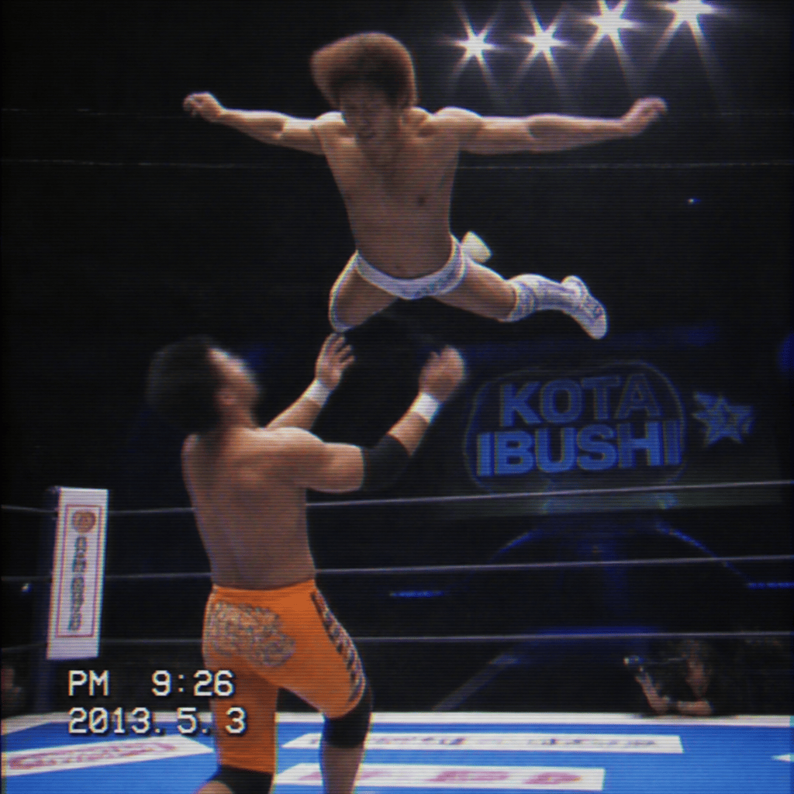

2026/09/12(金)
アベマ・試合結果速報！
○リア・リプリー (15分20秒 リプリーの逆十字) チェルシー・グリーン●
○飯伏幸太 (22分05秒 バンピング・ボム) 戸澤陽●
○ナタリア (17分30秒 シャープシューター) ASUKA●
○ジョニー・ガルガノ (14分45秒 ランニング・ネックブリーカー) La Parka●
○ライラ・ヴァルキュリア (10分10秒 フェイスバスター) ライラ・ヴァルキュリア●
○リヴ・モーガン (19分55秒 モーガン・スプラッシュ) ナオミ●
○アクシオム (12分30秒 アクシオム・クラッチ) 戸澤陽●
○ボルチン・オレッグ (25分00秒 パワーボム) オーティス●
○JDマクドナー (16分05秒 ムーンサルトプレス) ランディ・オートン●
○アイビー・ナイル (21分15秒 ストレッチマフラー) ステファニー・バッケル●
○ジュリア (18分25秒 ジュリアス・ガールドリーパー) ステファニー・バッケル●
○サントス・エスコバー (11分10秒 アセンディングドロップキック) YOH●
○ASUKA (20分30秒 アスカロック) ナオミ●
○ザックセイバーJr (13分40秒 スターファイアー) ジュリアス・クリード●
Thank you for Watching !

「○飯伏幸太 (22分05秒 バンピング・ボム) 戸澤陽●」